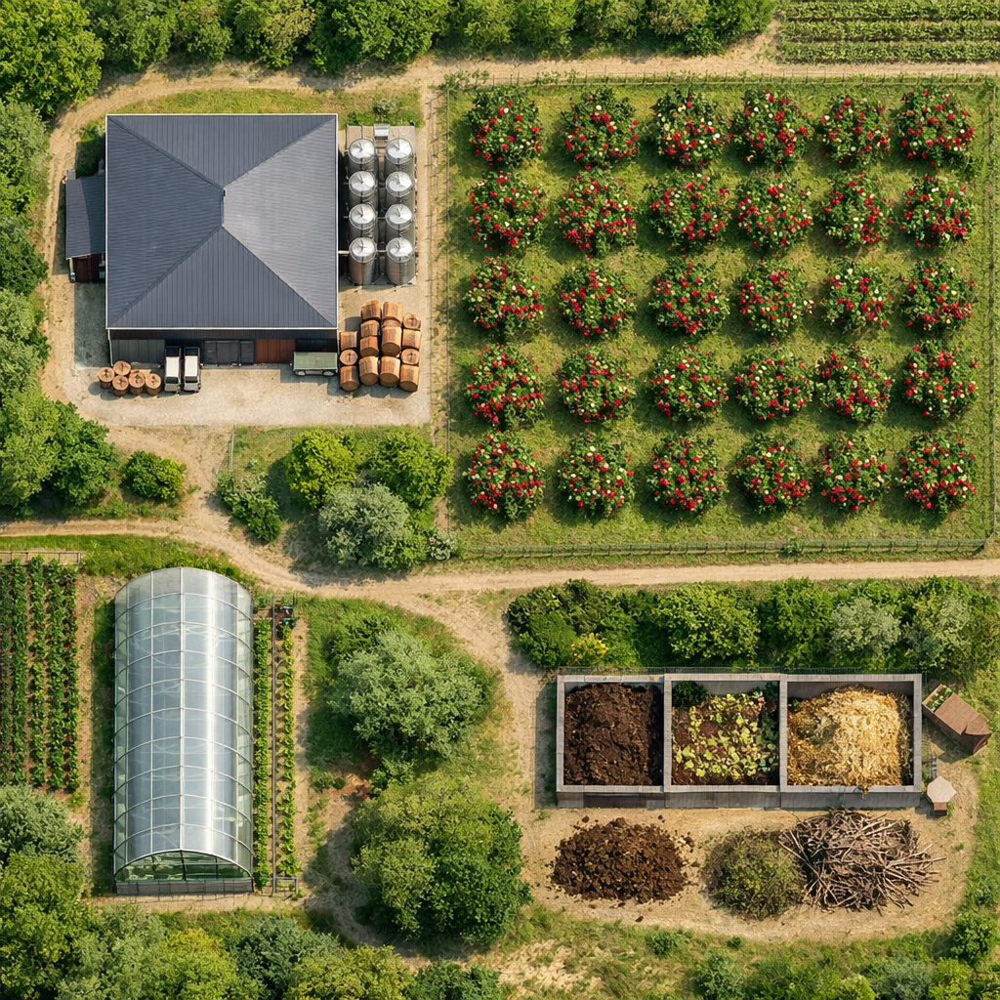
02.04.2026
123
лоірваолівраліовраол
Детальніше
лоірваолівраліовраол
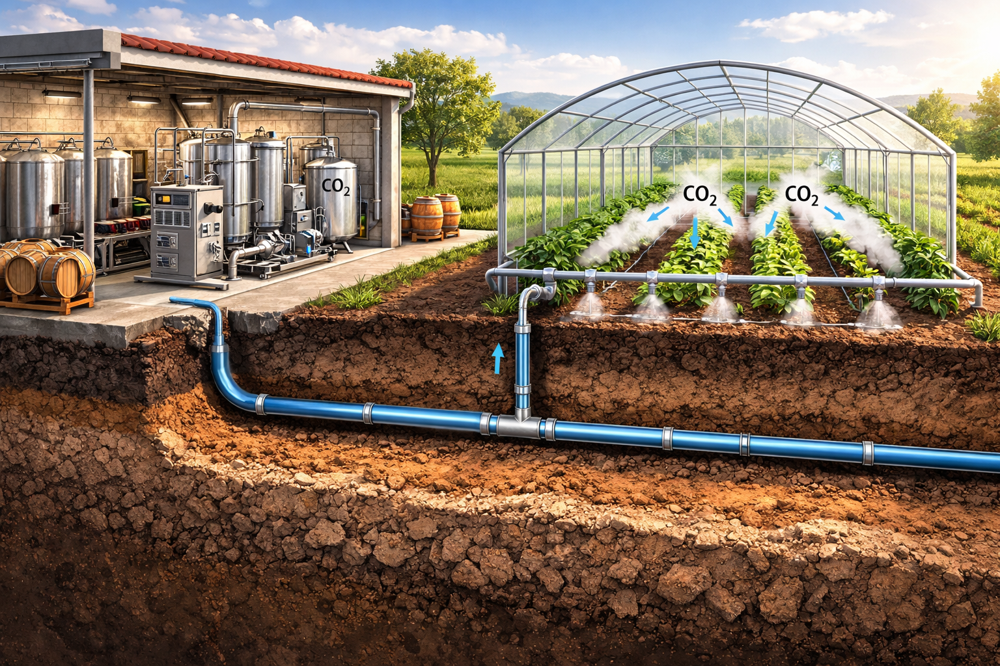
Національний університет харчових технологій
Від зерна до келиха — мистецтво бродіння,
підкріплене наукою
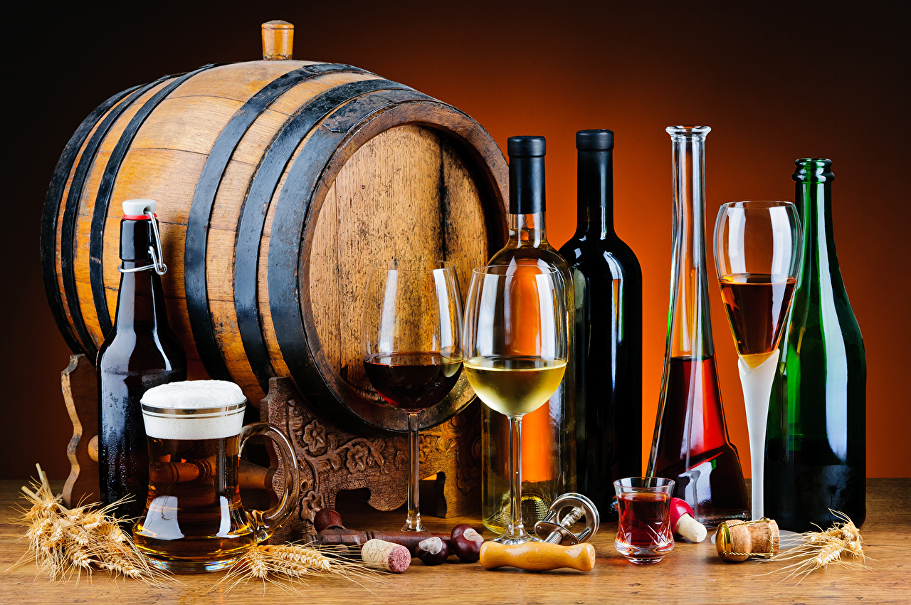


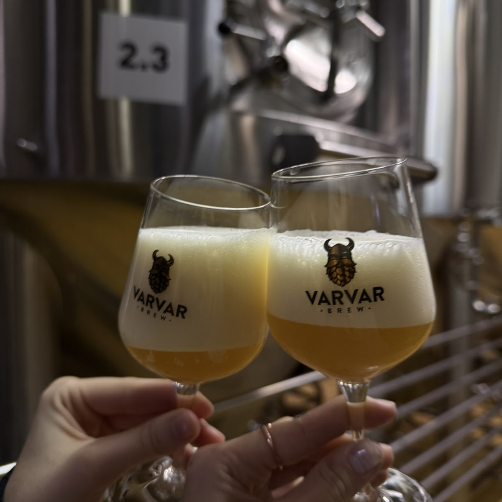
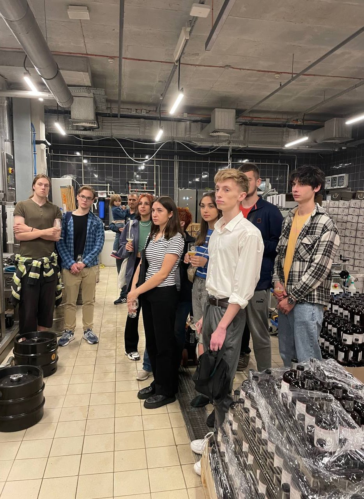

Кафедра біотехнології продуктів бродіння і виноробства здійснює підготовку фахівців у галузі знань 18 «Виробництво та технології» за спеціальністю 181 «Харчові технології».
Підготовка ведеться за освітнім ступенем «бакалавр» (ОП «Харчові технології та інженерія»), освітнім ступенем «магістр» (ОП «Технології продуктів бродіння і виноробства») та освітньо-науковим ступенем «доктор філософії» (ОНП «Харчові технології») денної і заочної формами навчання.
Кафедра одна з перших в університеті започаткувала та продовжує підготовку фахівців за дуальною освітою. Щорічно за програмою Erasmus+ в університеті Гайзенхайма (Німеччина) навчаються 1–2 студенти за професійним спрямуванням «Технологія вина».
Кредо кафедри — підготовка фахівців-лідерів. Ми прагнемо розкривати та розвивати потенціал наших вихованців для здобуття компетентностей із вирішення складних задач, досягнення особистого успіху і фінансової незалежності.
Підготовку здобувачів здійснює висококваліфікований колектив: 3 професори, доктори технічних наук та 10 кандидатів технічних наук, доценти.
Кафедра проводить унікальну сертифікатну програму «Професія сомельє і науково-практичні основи дегустації вин та алкогольних напоїв».
Професійні навички здобувачі набувають під час практик на підприємствах: ЗАТ «ОБОЛОНЬ», ТОВ «Немирівський ЛГЗ NЕМІRОFF», «САН Ін Бев Україна», «Центр культури вина SHABO», АТ «Коблево», ТОВ «Микулинецький бровар», міні-пивоварня VARVAR та ін.
Завантажте короткий огляд кафедри для вступників.
Сучасні лабораторії для дослідження мікробного синтезу, ферментації та нанотехнологій у харчовій промисловості.
Партнерство з крафтовими пивоварнями, виноробнями та виробниками ферментованих напоїв по всій Україні.
Обмінні програми, міжнародні конференції та співпраця з європейськими університетами і дослідницькими центрами.
Бакалаврат, магістратура та аспірантура — повний цикл підготовки від основ до дисертації.
Кафедру «Технології спирту» засновано у 1930 році у складі Київського інституту народного господарства. Ініціаторами були А.А. Фукс, І.П. Вавілов, А.Л. Малченко, І.Г. Грицюк.
Пізніше було створено Всесоюзний інститут спиртової промисловості, профілюючою в якому була кафедра «Технології спирту». У 1933 році цей інститут було об'єднано з Київським технологічним інститутом цукру. Згодом до нього приєдналися Київський спиртобродильний інститут і Київський ферментативний інститут. У 1935 році нинішній НУХТ було названо Київським технологічним інститутом харчової промисловості, а кафедру — «Технології бродильних виробництв». Першим завідувачем кафедри і до початку Другої світової війни був професор А.А. Фукс. Значну роль у становленні кафедри зіграли видатні вчені — професор О.О. Кіров, доценти А.Л. Малченко, І.П. Вавілов, І.М. Ройтер, М.М. Христенко, А.Г. Забродський.
З початком війни частина співробітників була призвана в армію, інші — евакуйовані. Після визволення Києва кафедра відновила роботу під керівництвом проф. П.М. Мальцева.
Й.Л. Сафріс, І.М. Ройтер, Л.Й. Ясінський, М.М. Христенко, Й.М. Куліновський були призвані в армію. І.Л. Сафріс і Л.Й. Ясінський загинули. О.О. Кіров, В.І. Лановий, І.Г. Теплицький залишилися в окупованому Києві. А.А. Фукс, І.Г. Грицюк, А.Г. Забродський, І.П. Вавілов, П.М. Мальцев, М.М. Коробов були евакуйовані, де працювали на інженерних посадах в спиртовій і пивоварній промисловостях. Після визволення Києва кафедра відновила свою роботу. З того часу і до 1972 року кафедру очолював професор, доктор технічних наук, заслужений діяч освіти України П.М. Мальцев. На кафедрі працювали доценти О.І. Олейнікова, М.М. Коробов, М.М. Христенко, І.М. Ройтер.
Із збільшенням контингенту студентів зріс обсяг педагогічної роботи кафедри. Відновився набір в аспірантуру, штат поповнився новими доцентами.
Педагогічний персонал поповнили доценти Б.Д. Метюшов, М.В. Зазірна, Є.І. Велика, В.К. Томашевич, В.Х. Суходол, В.О. Маринченко. Пізніше штат кафедри збільшився за рахунок випускників КТІХП, які навчались в аспірантурі і захистили кандидатські дисертації — В.М. Швець, Н.О. Ємельянова, П.В. Колотуша, А.Є. Мелетьєв, О.М. Проценко, Н.Я. Гречко, А.М. Куц, П.Л. Шиян, П.І. Меняйло, Г.Г. Дроздова та ін.
У 1973–1978 роках кафедру очолював проф. П.С. Циганков — видатний фахівець в галузі ректифікації спирту.
Професор Циганков — вчений з великим педагогічним стажем. Йому належать більше 170 наукових праць та 40 авторських свідоцтв. Серед них — монографії, навчальні посібники і підручники. Під керівництвом П.С. Циганкова організовано випуск в Україні інноваційного брагоректифікаційного обладнання для спиртової промисловості.
Понад 25 років (1979–2005) кафедру очолював професор, доктор технічних наук, заслужений працівник освіти України В.А. Домарецький.
У цей час на кафедрі працювали професори В.О. Маринченко, А.Є. Мелетьєв, П.Л. Шиян, О.С. Луканін, Л.С. Дегтярьов, доценти А.М. Куц, С.Р. Тодосійчук, Н.Я. Гречко, Г.Г. Дроздова, В.М. Кошова, В.Л. Прибильський, М.В. Карпутіна, М.М. Ковальов, В.М. Сидор, А.М. Фіщенко, Н.Е. Фролова, М.В. Білько, З.М. Романова, О.П. Вітряк. У 1992 році кафедра розпочала підготовку фахівців із спеціалізації «Технологія виноробства», а у 1997 році відбувся перший випуск інженерів-технологів-виноробів.
З 2005 до 2018 року кафедру очолював професор, доктор технічних наук П.Л. Шиян — лауреат Державної премії України, заслужений винахідник України.
Проф. Шиян пройшов шлях від старшого інженера Науково-дослідного інституту мікробіології НАН України до декана факультету бродильних, консервних і цукрових виробництв НУХТ. Був лауреатом Державної премії України в галузі науки і техніки у 1998 р., заслуженим винахідником України, переможцем Всеукраїнського конкурсу «Винахідник року».
Нині кафедру очолює доцент, кандидат технічних наук А.М. Куц. Кафедра динамічно розвивається, впроваджує дуальну освіту та міжнародні програми.
На кафедрі працюють професори, доктори технічних наук Білько М.В., Прибильський В.Л., доценти, кандидати технічних наук Бабич І.М., Бойко П.М., Бондар М.В., Булій Ю.В., Мукоїд Р.М., Романова З.М. Завідувач кафедри Куц А.М. є експертом ДАК МОНМСУ за напрямом «Харчові технології та інженерія». Проф. Білько М.В. є головою спеціалізованої вченої ради 05.18.07 і членом технічного комітету виноробної промисловості. З 1931 року кафедрою підготовлено близько 7000 фахівців у галузі бродильних виробництв. Щорічно кафедра випускає близько 35 бакалаврів та магістрів.
Ми пропонуємо три рівні вищої освіти за спеціальністю «Харчові технології» — освітня програма «Технології продуктів бродіння і виноробства».
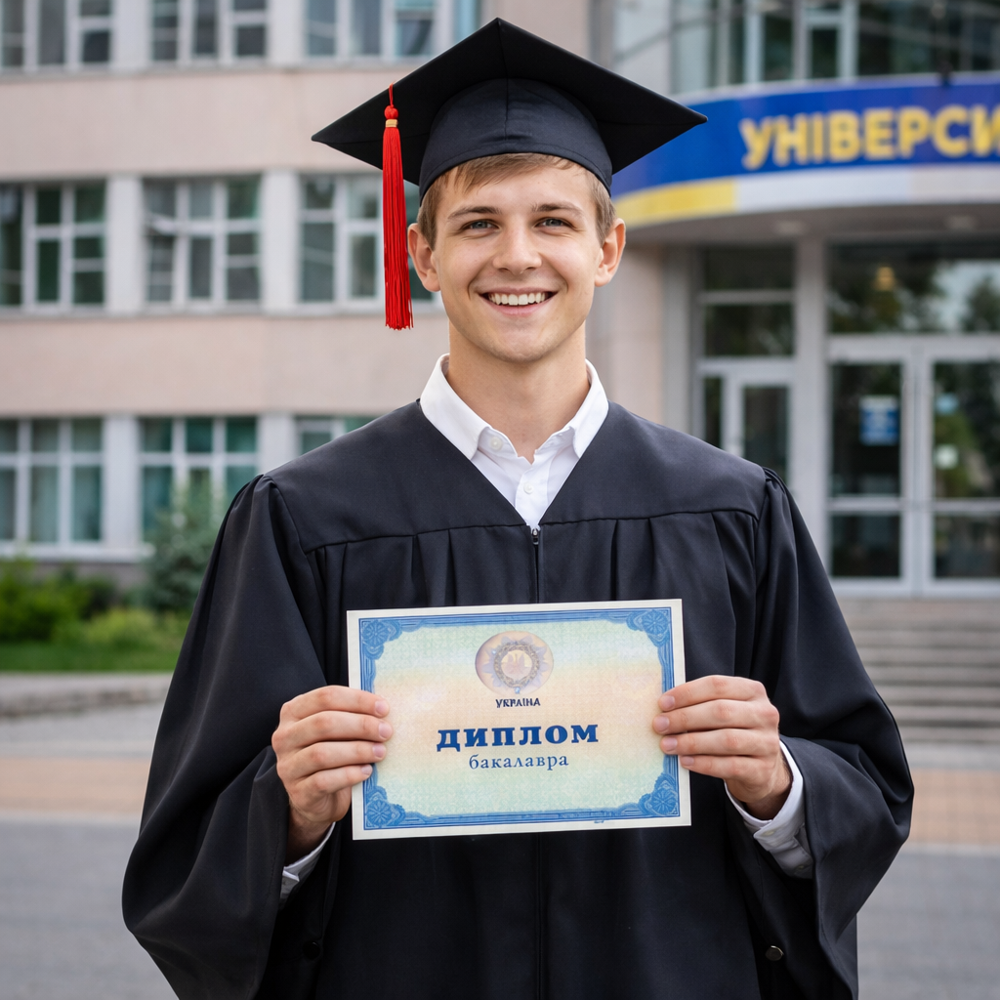
Підготовка універсального бакалавра з поглибленими знаннями з різних галузей харчової промисловості. Елементи дуальної освіти, міжнародна мобільність (Erasmus+), практика на підприємствах з перших курсів.
Освітня програма орієнтована на підготовку фахівців, які володіють комплексом спеціальних знань та здатні застосувати:
Програма спрямована на підготовку універсального бакалавра з базовими фундаментальними та професійно-орієнтованими знаннями з усіх галузей харчової промисловості. Передбачає теоретичну та практичну підготовку, елементи дуальної освіти, міжнародну академічну мобільність (Erasmus+ в університетах Німеччини та Польщі) та широкий вибір виробничих практик на підприємствах галузі.
Можливі посади: керівник підприємства, головний технолог, завідувач виробництвом, інженер з контролю якості харчових продуктів, начальник цеху, завідувач лабораторії.
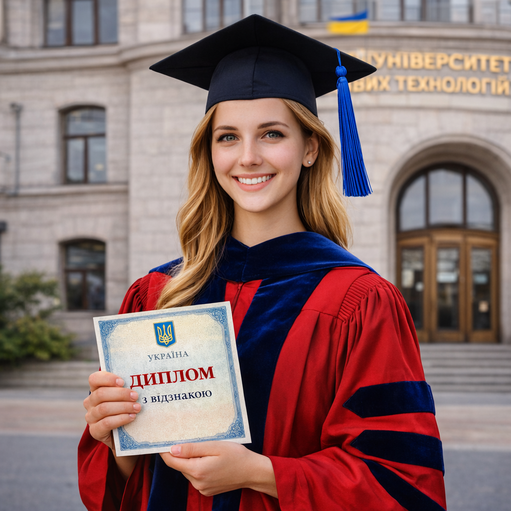
Єдина в Україні кафедра, що охоплює всі напрями бродильної промисловості. Поглиблена підготовка з інноваційних технологій, управління якістю та наукових досліджень. Можлива дуальна форма навчання з гарантованим працевлаштуванням.
Кафедра БПБВ є єдиною в Україні, що охоплює всі професійні напрями бродильної промисловості. Програма спрямована на підготовку магістра з фундаментальними та професійно-орієнтованими знаннями з бродильної галузі, здатного розв'язувати комплексні науково-технічні завдання.
Практика проходить на підприємствах: ЗАТ «ОБОЛОНЬ», ТОВ «Немирівський лікеро-горілчаний завод NЕМІRОFF», «САН Ін Бев Україна», Центр культури вина SHABO, АТ «Коблево», ТОВ «Микулинецький бровар» та ін. Можлива дуальна форма навчання з гарантованим працевлаштуванням.
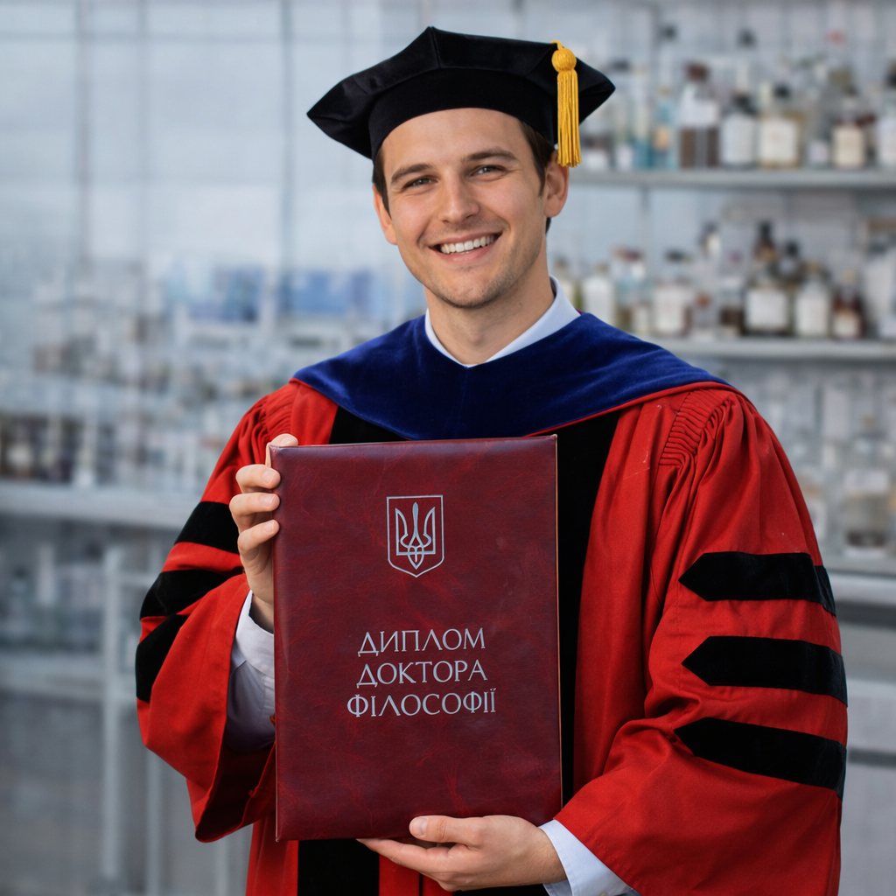
Підготовка наукових та науково-педагогічних фахівців, здатних генерувати нові знання та розв'язувати комплексні проблеми у галузі харчових технологій. Можливість стажування в наукових інститутах Європи.
Програма спрямована на підготовку висококваліфікованих наукових та науково-педагогічних фахівців, здатних генерувати нові знання, розв'язувати комплексні проблеми та проводити самостійне наукове дослідження у галузі харчових технологій.
Дослідження спрямовані на підвищення якості та безпечності харчових продуктів, наукове обґрунтування технологічних основ, ресурсо- та енергоефективність, покращання харчової та біологічної цінності продуктів, інноваційний розвиток теорії і практики харчових технологій.
Навчання включає цикли мовної, загальнонаукової та професійної підготовки, а також вибіркові дисципліни для поглибленого вивчення наукових аспектів обраної галузі. Здобувачі мають можливість проводити дослідження в наукових інститутах та університетах Європи (Німеччина, Швейцарія, Франція, Словаччина, Польща).
Можливі посади: науковий співробітник, викладач ЗВО, керівник підприємства, завідувач лабораторії.
Наукова робота кафедри спрямована на створення інноваційних, ресурсо- та енергозберігаючих технологій продуктів бродіння та виноробства — від спирту й дріжджів до пива, квасу, комбучі та вин. Колектив кафедри продовжує традиції наукових шкіл із солодорощення, пивоваріння, ректифікації спирту та виноробства, щороку отримуючи патенти України, публікуючи десятки статей у фахових і міжнародних виданнях та залучаючи здобувачів до реальних дослідницьких проєктів.
Дослідження високоефективних технологій мікробного синтезу для створення нових ферментованих продуктів. Розробка інноваційних штамів мікроорганізмів для харчової промисловості.

Застосування нанотехнологій для забезпечення безпеки та якості продуктів бродіння і виноробства.
Розробка ресурсо- та енергозберігаючих технологій виробництва для екологізації виробничих процесів.
Створення нових функціональних напоїв на основі ферментації — комбуча, пробіотичні напої, безалкогольне пиво.
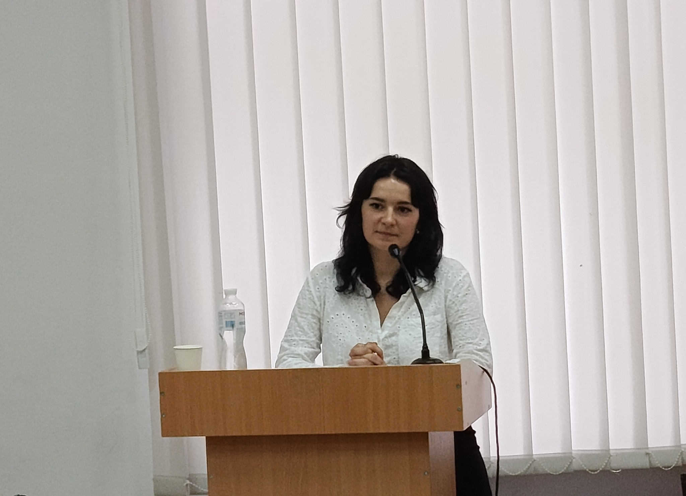
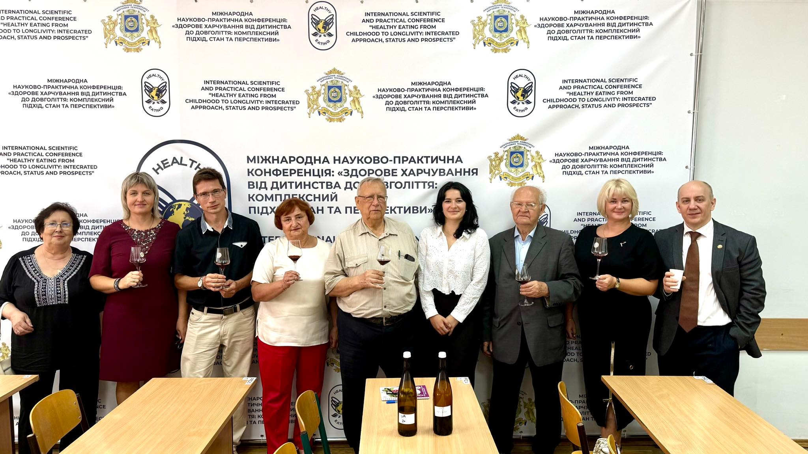
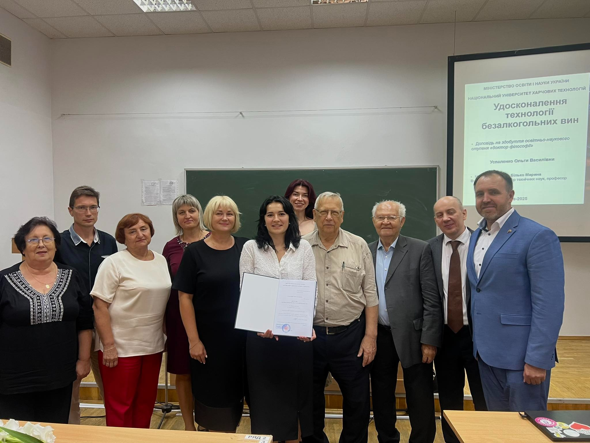
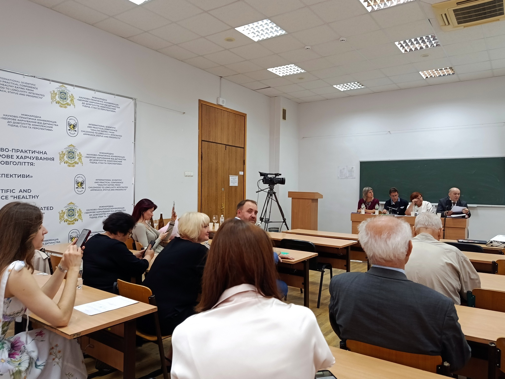
Випускниця кафедри Ольга Успаленко захистила дисертацію на тему «Удосконалення технології безалкогольних вин» під науковим керівництвом професора Марини Білько.
Дослідження зосереджене на підборі оптимальних сортів винограду та енологічних практик для отримання безалкогольних вин із яскравим ароматом, гармонійним смаком і стабільною якістю. Розроблені технології пройшли апробацію на виробництві та отримали високу оцінку фахівців галузі.
Разова спеціалізована вчена рада одноголосно присудила Ользі науковий ступінь доктора філософії за спеціальністю 181 «Харчові технології».
Щиро вітаємо Ольгу та її наукову керівницю! Бажаємо нових відкриттів і сміливих кроків у розвитку інноваційного виноробства України!
«Удосконалення технології білих ігристих вин на основі сортів винограду Закарпатського регіону»
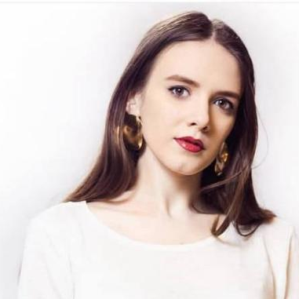
«Удосконалення технології медових ферментованих напоїв із застосуванням біотехнологічних способів»
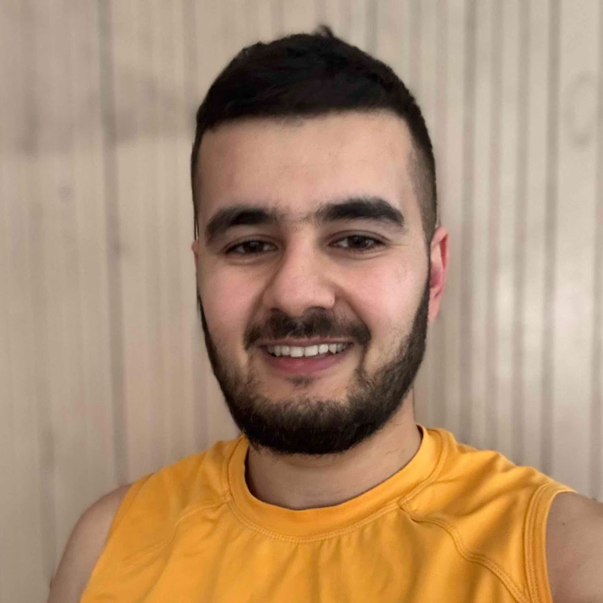
Аспірант кафедри БПБВ, проводить дослідження у галузі харчових технологій.
На кафедрі працюють 5 студентських науково-дослідних гуртків. Результатом їх роботи є щорічне публікування 10–15 наукових статей та понад 30 доповідей на міжнародних і всеукраїнських наукових конференціях.
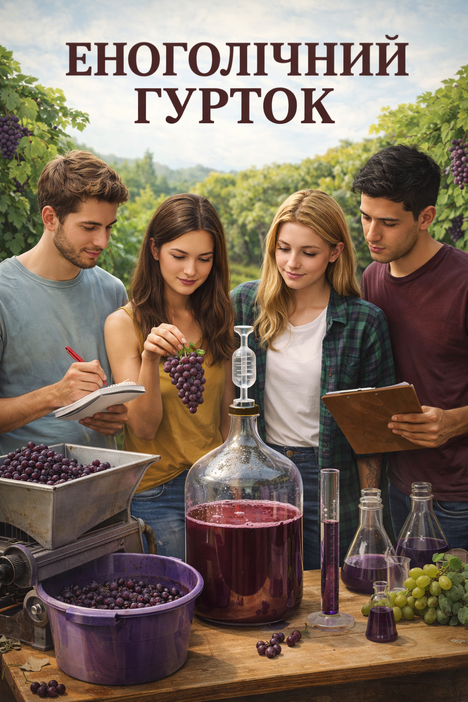
Початок сезону виноробства відзначився активною роботою й на кафедрі біотехнології продуктів бродіння і виноробства. У межах діяльності наукового гуртка студенти працювали з виноградом різних сортів — як європейської групи, так і української селекції та міжвидових гібридів. Зокрема, у дослідженнях використовували сорти Каберне Совіньйон, Мерло, Одеський чорний, Красень, Юпітер, Рислінг, Сухолиманський, Шардоне.
У процесі роботи студенти самостійно здійснювали переробку винограду за різними технологічними схемами, отримували сусло, опановували роботу з дріжджами та поживними середовищами для них, а також одержували виноматеріали. Окрему увагу було приділено роботі з виноградними вичавками як цінною вторинною сировиною для виготовлення екстрактів із високою біологічною цінністю.
Отримані виноматеріали стали основою для формування кількох наукових напрямів досліджень, а також будуть використані під час виконання магістерських кваліфікаційних робіт.
Висловлюємо щиру подяку корпорації «Укрвинпром» та особисто генеральному директору Володимиру Кучеренку за надану допомогу з виноградною сировиною та обладнанням.
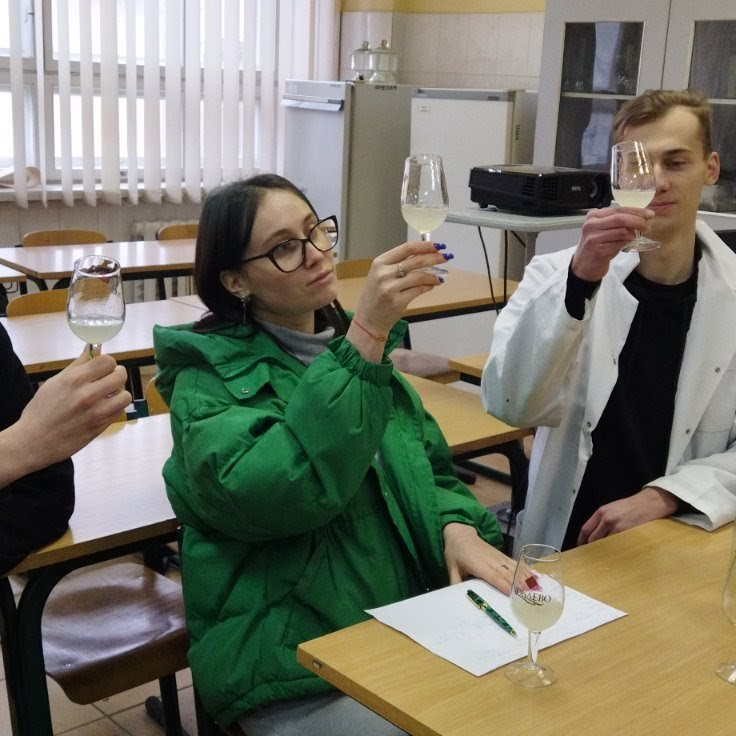
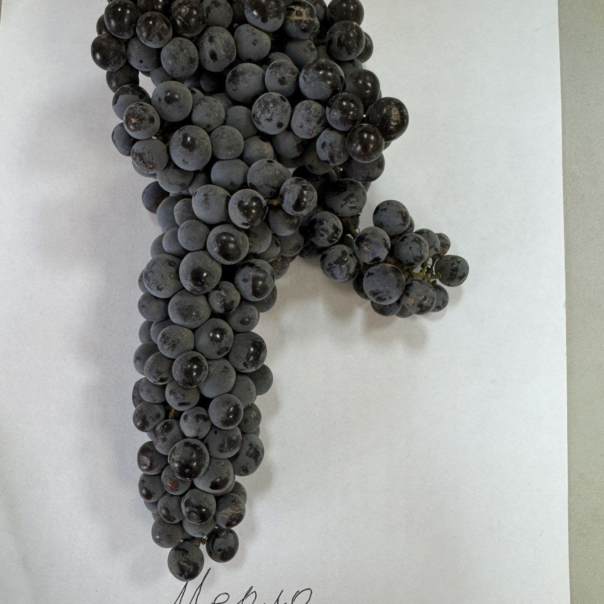


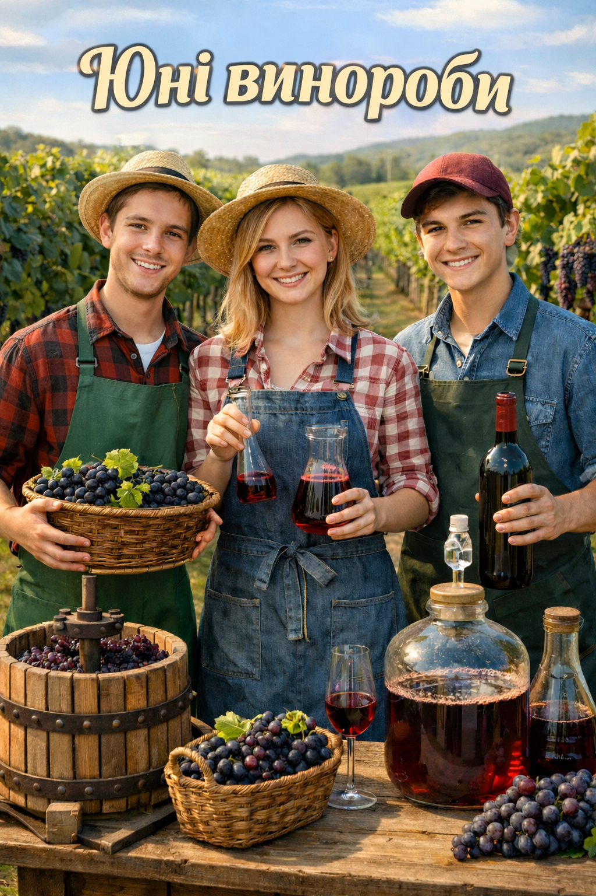
Робота наукового гуртка також була зосереджена на підборі локальних сортів винограду Закарпатського регіону з метою використання їх у виробництві ігристих вин. Дослідження проводили з виноградом сортів, поширених у Закарпатській області, зокрема Черсегі Фюсереш, Блауфранкіш, Біанка, Олег Діамант.
У межах практичної частини студенти самостійно здійснювали переробку винограду з метою отримання виноматеріалів для ігристих вин; проводили стабілізацію тихих вин із використанням сучасних допоміжних матеріалів; підготовлені виноматеріали закладали на вторинне бродіння в пляшках за класичною технологією.
Отримані зразки виноматеріалів із локальних сортів винограду та зразки ігристих вин стали основою для поточних наукових досліджень здобувачів ОС «Магістр».
Висловлюємо щиру подяку директору ФГ "Chateau Pauk" Івану Федоровичу Паук за надану сировину, а також директору ТОВ «КОНТ» Кепканову Юрію Анатолійовичу за допомогу в наданні дріжджів та матеріалів для бродіння.
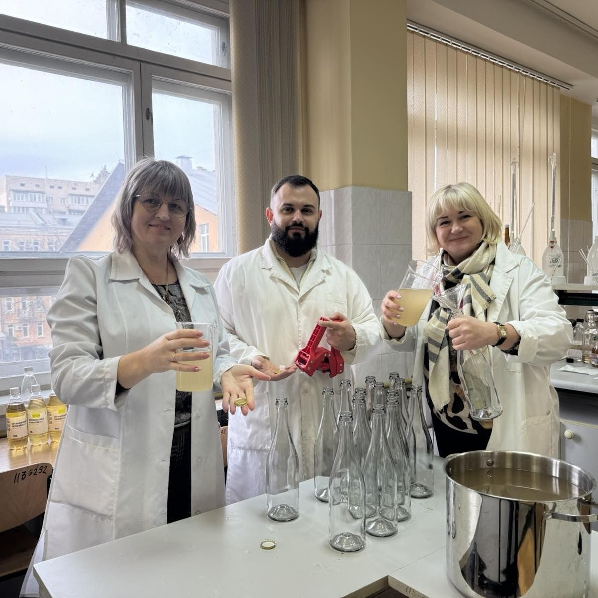
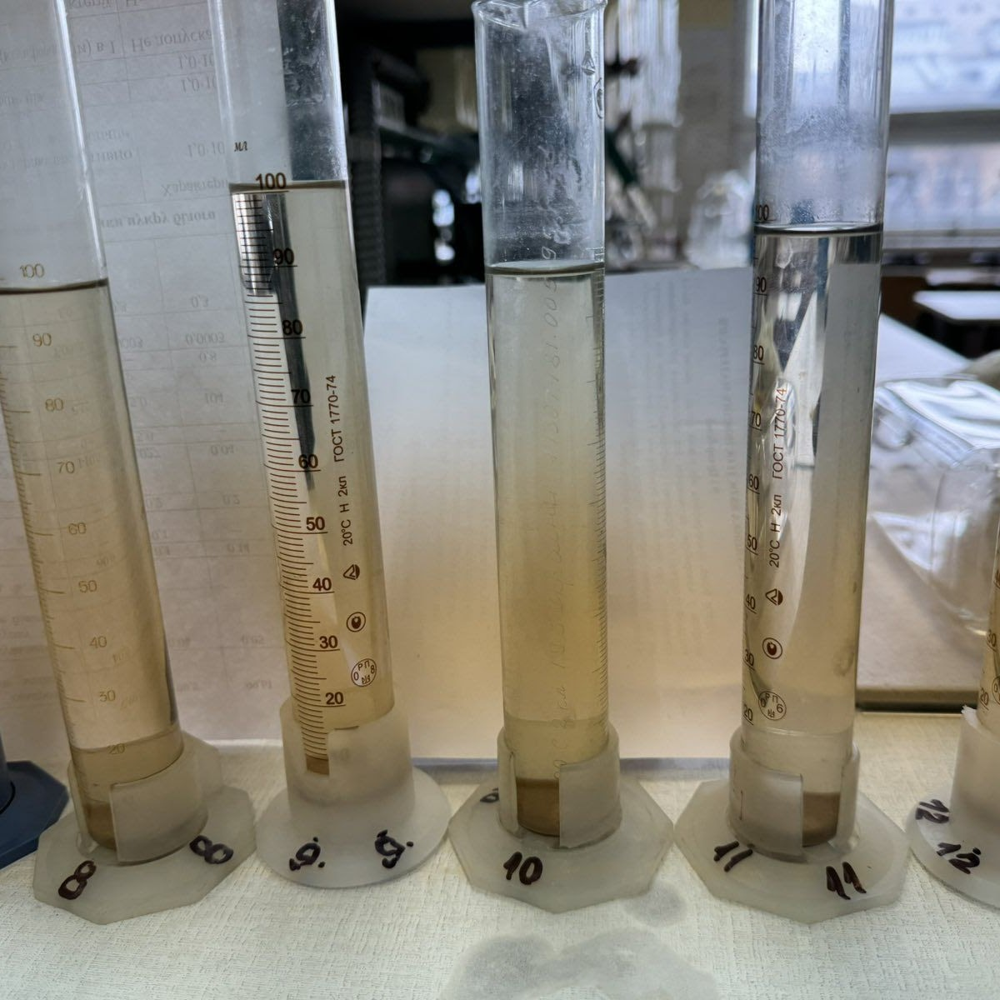


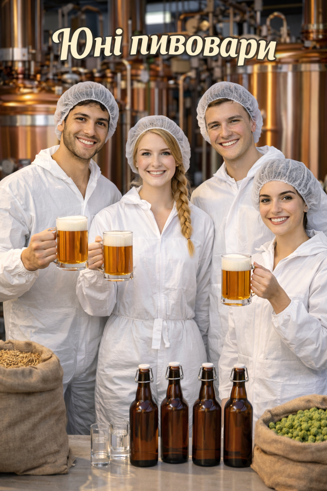
Ви думаєте, що пивоваріння — це просто рецепт? Ми доведемо, що це справжнє мистецтво, поєднане з високою наукою. Наш гурток об'єднує здобувачів, які прагнуть зазирнути «під кришку» технологічних процесів та створити продукт майбутнього.
Ми не просто варимо — ми досліджуємо. Наша діяльність охоплює повний цикл створення напою:
Хочеш спробувати себе в ролі пивовара-науковця? Пиши нам у директ або приходь на кафедру!

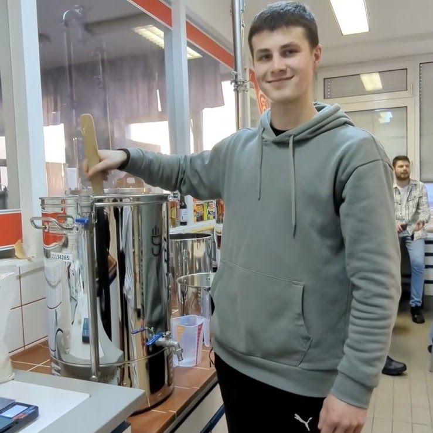


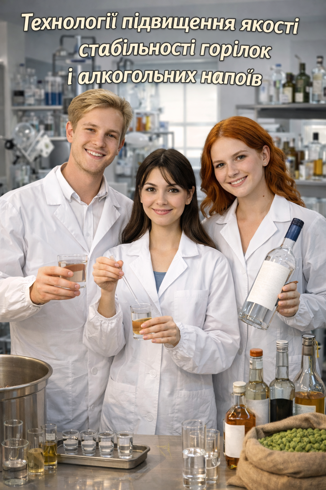
Робота наукового гуртка спрямована на підвищенні якості алкогольної продукції та збільшенням строку її придатності. Проводили дослідження застосування сучасних фільтрувальних, сорбційних, комплексних багатокомпонентних завантажень для кондиціювання води та очищення водно-спиртових сумішей у технології горілок, горілок особливих та лікеро-горілчаних напоїв.
Здобувачі самостійно аналізували воду та сортівку до та після її очищення, визначали фізико-хімічні показники досліджуваних матеріалів, встановлювали технологічні режими та оцінювали соціально-економічну ефективність зумовлену покращенням якості і безпечності підготовленої води та лікеро-горілчаної продукції.
За результатами роботи отримано патент на корисну модель №158129 "Спосіб очищення водно-спиртової суміші для виробництва горілок і горілок особливих", зареєстровано в Державному реєстрі України корисних моделей 01.01.2025.
Важливим напрямом досліджень є вдосконалення технологій алкогольних напоїв із використанням сучасних боніфікуючих інгредієнтів і напівфабрикатів для підвищення стійкості горілок та лікеро-горілчаних виробів.
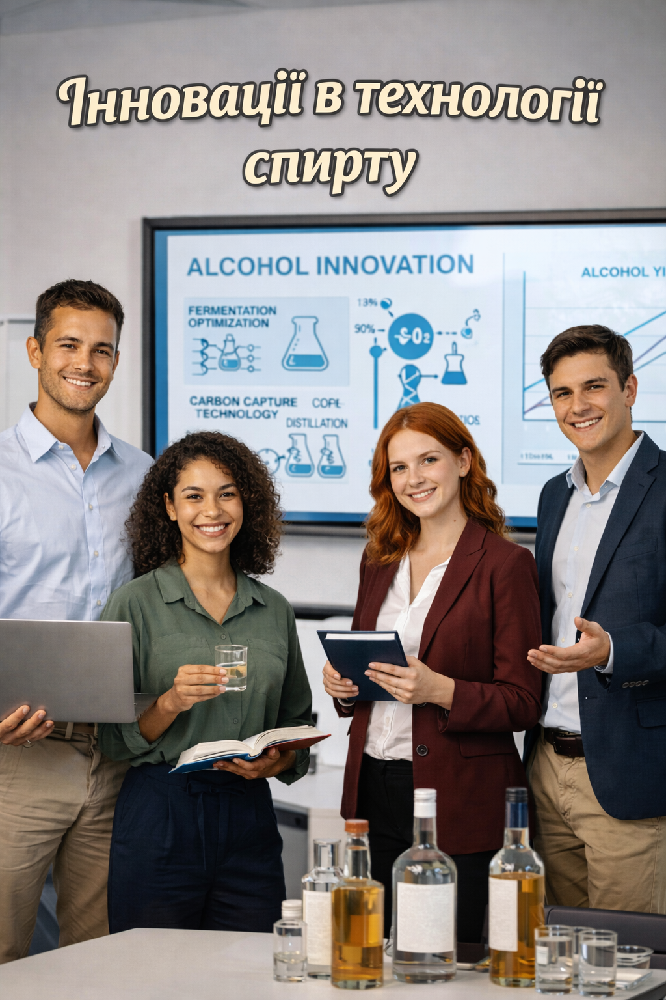
Науковий гурток спрямований на дослідження та вдосконалення сучасних технологій виробництва етилового спирту. Здобувачі вивчають інноваційні підходи до переробки сировини, оптимізації процесів бродіння та ректифікації, а також розробляють нові методи підвищення якості кінцевого продукту.
| Назва гуртка | Науковий керівник | Аудиторія, день та час |
|---|---|---|
| Енологічний гурток | проф. Білько М.В. | Непарний тиждень, п'ятниця 11:00. Он-лайн та Ж-505 |
| Юні пивовари | доц. Мукоїд Р.М. | Парний тиждень, середа 13:00. Он-лайн та Ж-504 |
| Юні винороби | доц. Бабич І.М. | Парний тиждень, п'ятниця 11:30. Он-лайн та Ж-505 |
| Технології підвищення якості і стабільності горілок та алкогольних напоїв | доц. Олійник С.І. | Парний тиждень, вівторок 10:00. Он-лайн та Ж-509 |
| Інновації технологій спирту | доц. Бондар М.В. | Непарний тиждень, вівторок 11:00. Он-лайн та Ж-510 |
Ці люди — науковці-практики, які поєднують академічний досвід з роботою на реальних виробництвах.
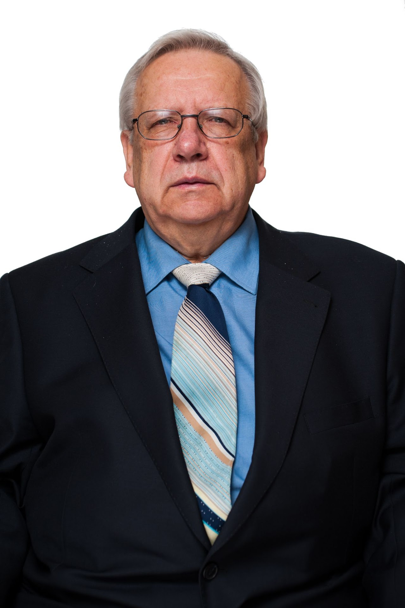
Координує розвиток освітніх програм і наукових напрямів кафедри. Наукові дослідження в галузі технологій спирту, пива та алкогольних напоїв.
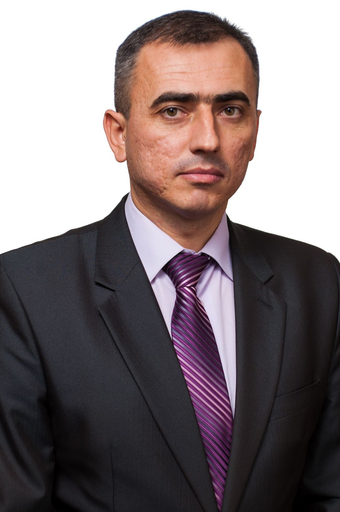
Відповідальний за дуальну освіту та дистанційне навчання на кафедрі. Спеціалізується на технології пива та крафтовому пивоварінні.
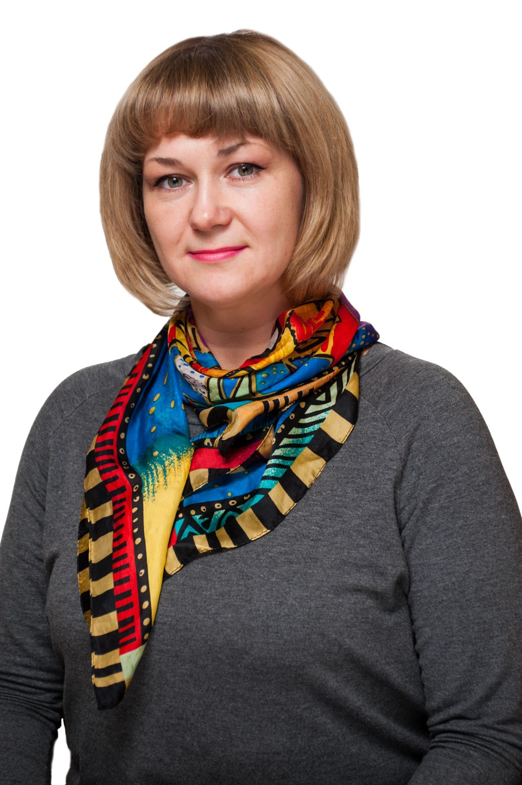
Відповідальна за міжнародну діяльність на кафедрі. Спеціалізується на технології вин різних типів та медових ферментованих напоїв.
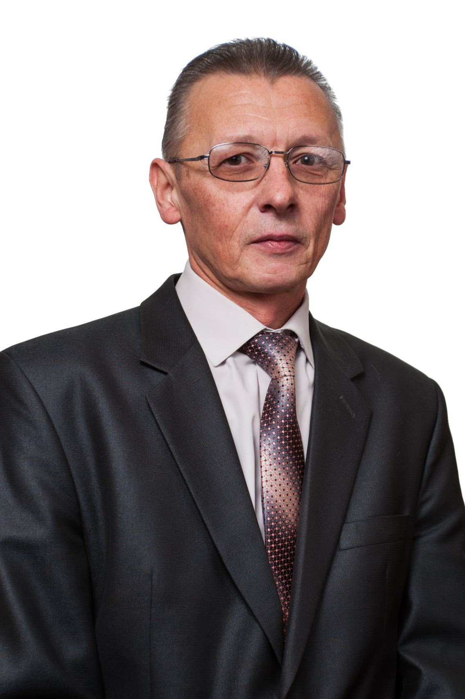
Відповідальний за наукову роботу на кафедрі. Гарант освітньої програми «Магістр» «Технологія продуктів бродіння і виноробства». Засновник наукового напряму технологій ферментованих безалкогольних напоїв (квас, комбуча та ін.).
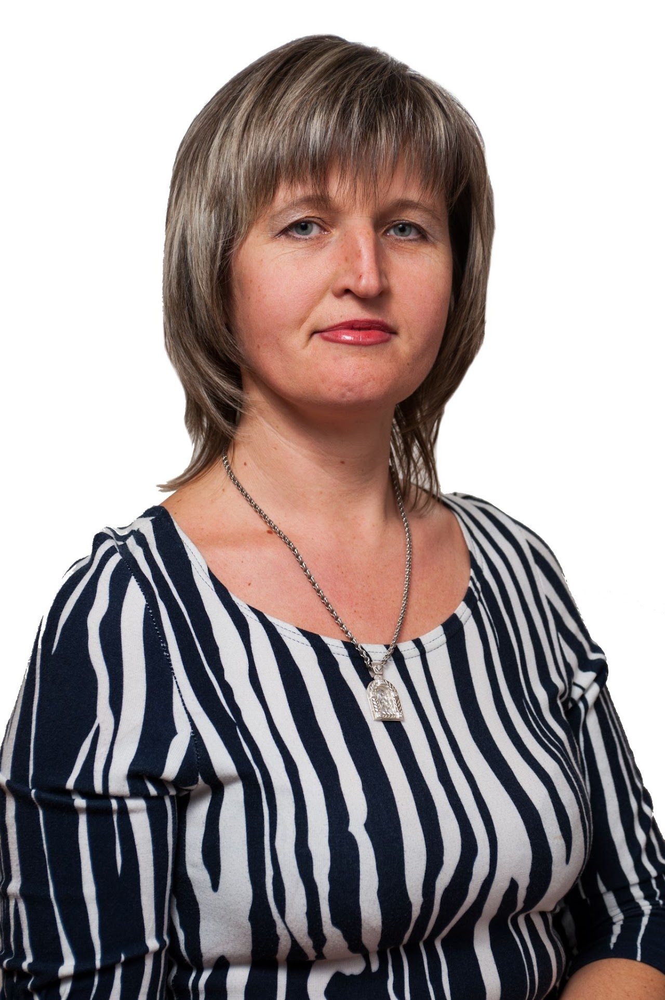
Відповідальна за практичну підготовку студентів на кафедрі. Спеціалізується на технології вина.
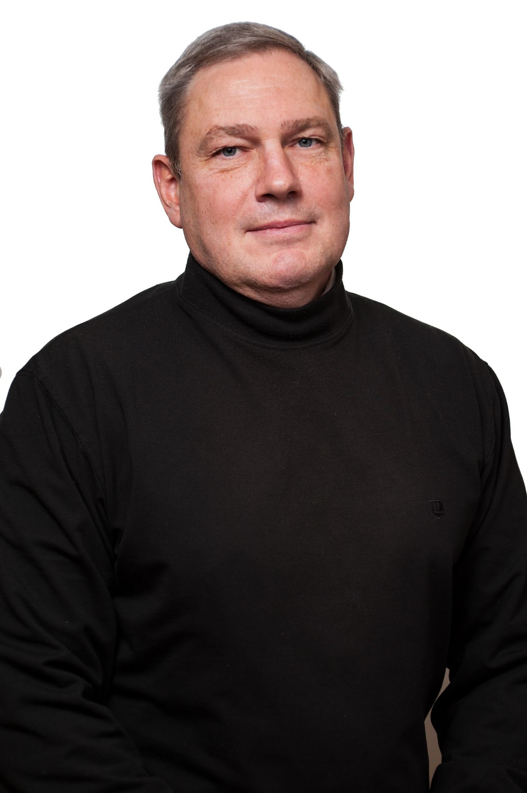
Спеціалізується в напрямку виробництва біопалива з відновлюваної сировини.
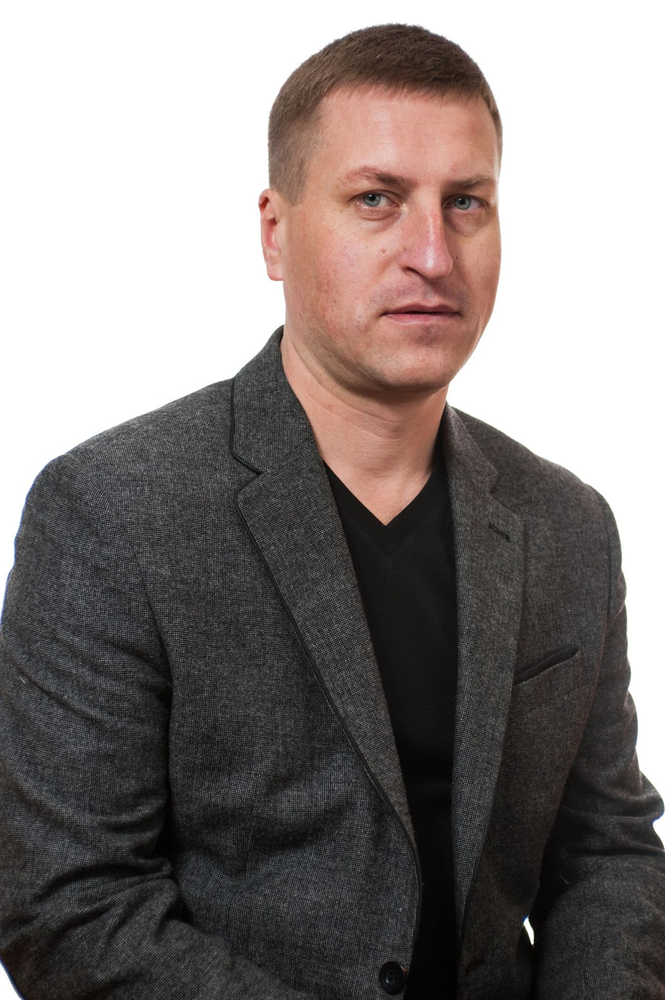
Відповідальний за виховну роботу здобувачів. Спеціалізується на розробленні ефективних способів використання дезінфікуючих засобів в технології етилового спирту.
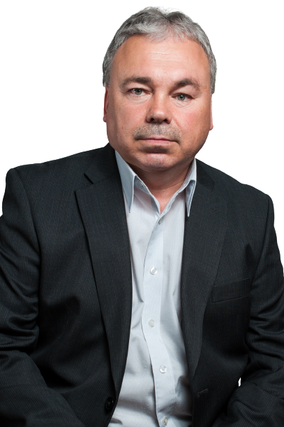
Науковець в галузі спиртового виробництва, фахівець з циклічної ректифікації. Автор більше 40 патентів на винаходи та корисні моделі.
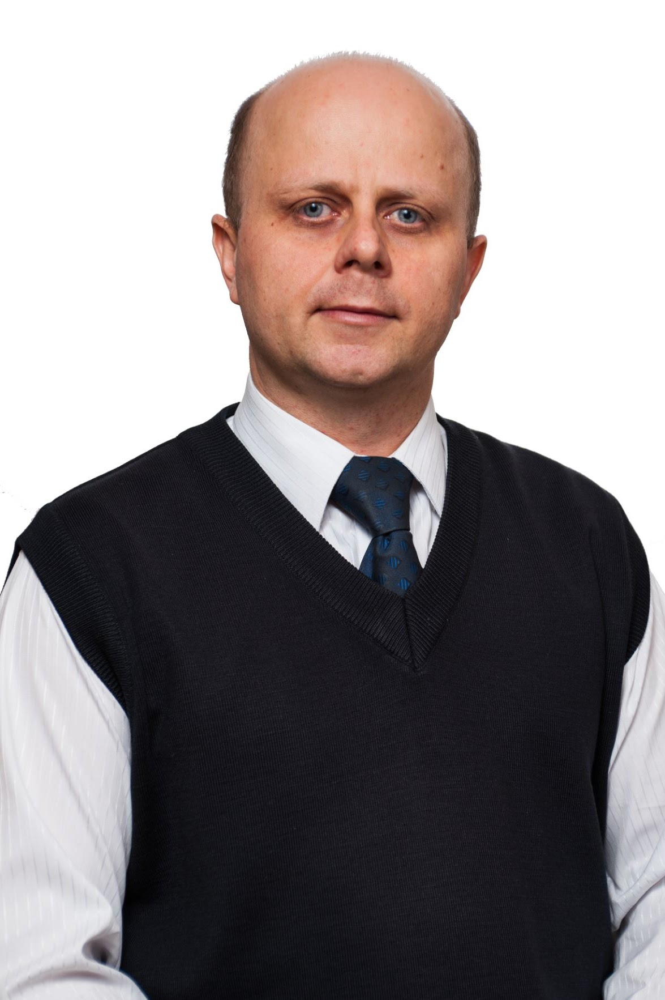
Відповідальний за профорієнтаційну роботу. Наукові дослідження в галузі технології етилового спирту.
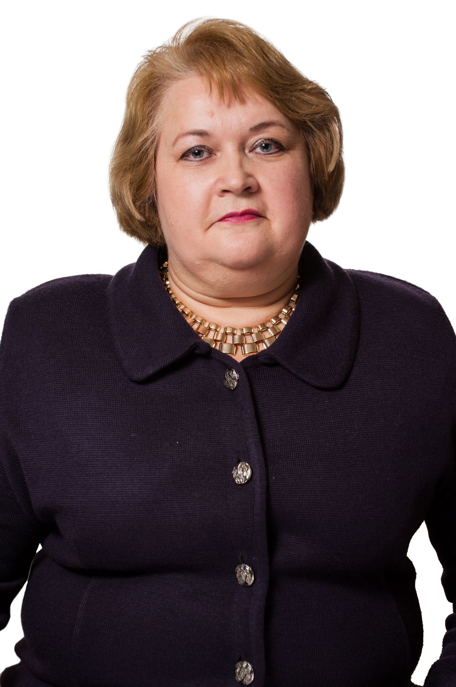
Наукові дослідження в напрямку удосконалення технології підготовки води та водно-спиртових сумішей у виробництві спиртних напоїв.
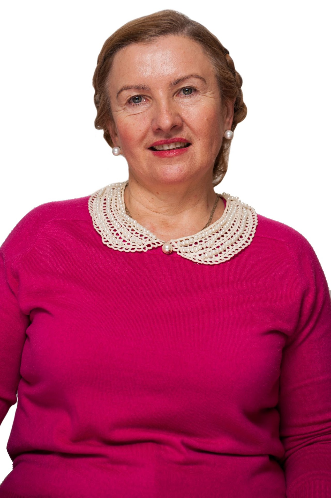
Відповідальна за зв'язок з бібліотекою. Спеціалізується на технології пива.
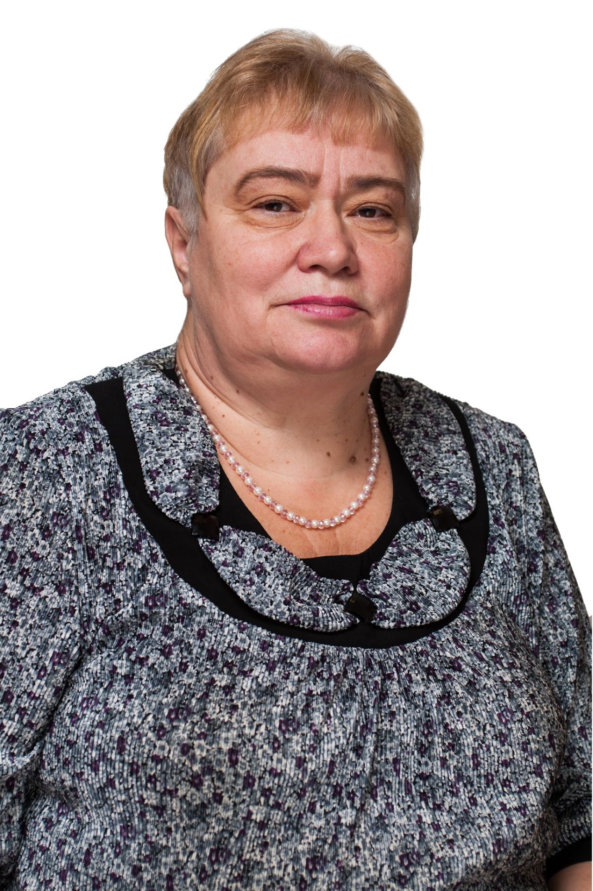
Забезпечує роботу навчальних та наукових лабораторій, відповідає за сучасне обладнання й підтримку експериментальної бази кафедри.
| Викладач | Аудиторія | Непарний тиждень | Парний тиждень |
|---|---|---|---|
| зав. кафедри Куц А.М. | Ж-508 | середа 13:20 – 14:40 | середа 13:20 – 14:40 |
| проф. Білько М.В. | Ж-509 | четвер 11:20 – 12:40 | середа 11:20 – 12:40 |
| проф. Прибильський В.Л. | Ж-501, консультації в Zoom | середа 13:00 – 14:00 | середа 13:00 – 14:00 |
| доц. Бабич І.М. | Ж-500 | вівторок 13:20 – 14:40 | вівторок 13:20 – 14:40 |
| доц. Бойко П.М. | Ж-500 | понеділок 12:00 – 13:00 | вівторок 12:00 – 13:00 |
| доц. Бондар М.В. | Ж-510 | — | — |
| доц. Булій Ю.В. | Ж-500 | середа 13:20 – 14:40 | середа 13:20 – 14:40 |
| доц. Кириленко Р.Г. | Ж-507 | вівторок 9:50 – 11:20 | середа 9:50 – 11:20 |
| доц. Мукоїд Р.М. | Ж-500 | середа 13:20 – 14:40 | четвер 13:20 – 14:40 |
| доц. Олійник С.І. | Ж-509 | четвер 14:45 – 16:00 | середа 11:20 – 12:40 |
| доц. Романова З.М. | Ж-510 | четвер 14:45 – 16:00 | середа 11:20 – 12:40 |
Слідкуйте за останніми подіями та досягненнями кафедри.

лоірваолівраліовраол
лоірваолівраліовраол

Здобувачі кафедри вдруге представляють Україну на конкурсі молодих дегустаторів вина в межах Salon International de l’Agriculture у Парижі. Тимур Громов (2 курс) та Елеонора Суперека (4 курс) змагаються з учасниками з різних країн, визначаючи сорт винограду, регіон, клімат, вік та орієнтовну вартість вина, а також знайомлячи світ із українською культурою та кухнею.
ДетальнішеНа конкурсі молодих дегустаторів вина в межах Salon International de l’Agriculture в Парижі Елеонора Суперека здобула 1 місце у першому турі та 2 місце у другому серед 30 учасників з різних європейських країн. Складні купажі, сенсорний аналіз, еногастрономія та технологічні тонкощі виробництва — завдання рівня досвідчених фахівців, які вона виконала блискуче, підтвердивши силу української школи виноробства.
ДетальнішеВипускники кафедри БПБВ займають керівні посади на підприємствах харчової промисловості України та Європи — від крафтових пивоварень до міжнародних корпорацій.
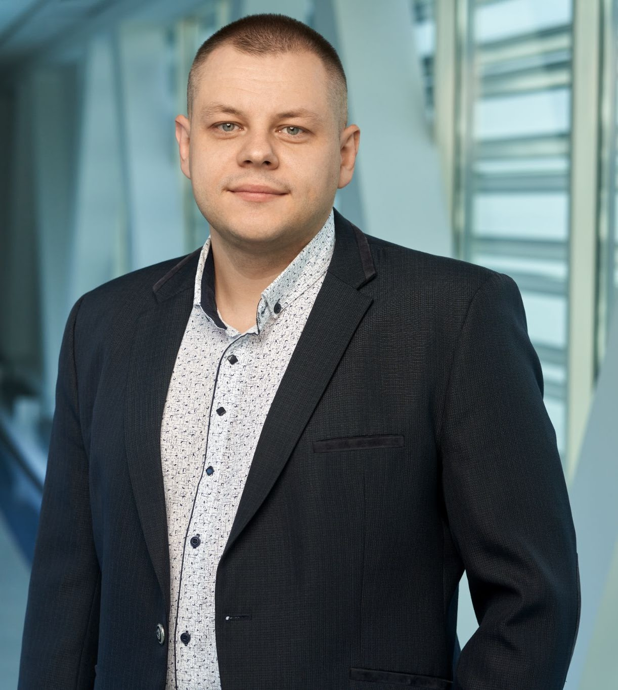
З 2011 р. в ПрАТ Карлсберг Україна — від молодшого технолога до Директора з якості (з 2024). Навчався з елементами дуальної освіти.
Кафедра БПБВ була не просто місцем навчання, це рідні кабінети і коридори де я професійно зростав і отримав базу для подальшого зростання у галузі. Команда найкращих викладачів і мудрих наставників допомогла стати на ноги в реаліях сучасного життя. Дуже вдячний викладачам кафедри за їх підтримку і допомогу, за те що вкладали в нас сили і знання для нашого зростання.
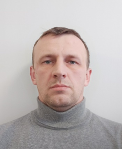
Головний технолог ТОВ «САНОЛТА ПРОТЕЇН» (біоетанол). Працював на спиртових заводах України та Азербайджану (реконструкція, пусконалагодження). Навчається на 4-му курсі НУХТ з елементами дуальної освіти.
Кафедра БПБВ дала міцну теоретичну базу та практичне розуміння виробничих процесів. Отримані знання дозволили впевнено працювати на спиртових і біоетанольних підприємствах та професійно зростати в галузі.
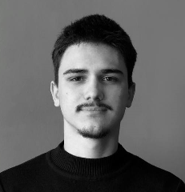
Молодший технолог крафтового виробництва ТОВ «Броварня Міра» (з 2024). Бакалавр НУХТ 2020–2024, продовжує магістратуру з дуальною освітою.
Кафедра БПБВ неодмінно асоціюється з приємними спогадами про навчання. Хоч період навчання припав на нелегкі часи, викладачі кафедри завжди старалися, щоб студенту було цікаво вивчати інформацію та працювати в лабораторіях. Дуже дякую усьому колективу кафедри за віддачу, навички та усе чому ви мене навчили, це дало поштовх для початку моєї професійної кар'єри.
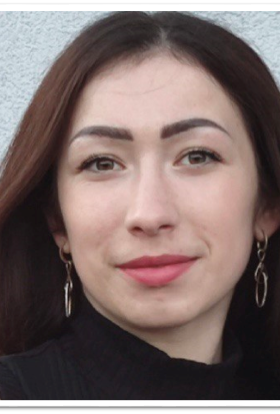
Технолог ТОВ «ЛВН ЛІМІТЕД» (ТМ Nemiroff) з 2025 р. Бакалавр 2024, магістратура з дуальною освітою.
Кафедра технологій бродіння та виноробства стала не лише місцем навчання, а й важливою основою мого професійного становлення. Саме тут я здобула ґрунтовні теоретичні знання та практичні навички, необхідні для роботи в реальних виробничих умовах. Професіоналізм викладачів, їхня підтримка та зацікавленість у розвитку студентів сприяли формуванню системного мислення й упевненості у власних силах. Щиро вдячна колективу кафедри за знання, досвід і мотивацію до подальшого професійного зростання в обраній галузі.
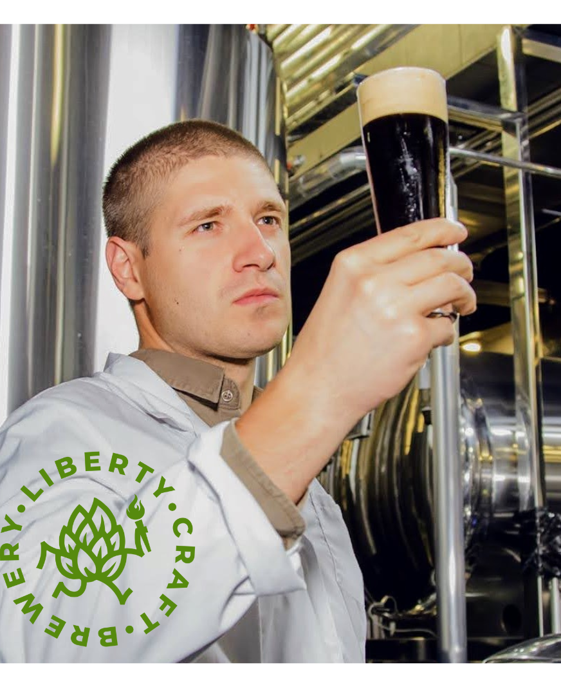
НУХТ 2007–2012, к.т.н. 2015. Головний технолог броварні «Космополіт», член дегустаційної комісії ПрАТ «Укрпиво». У 2022 р. заснував Liberty Craft Brewery (Баварія, Німеччина).
Для мене кафедра БПБіВ це не лише місце мого навчання і проведення цікавих студентських років, а й колектив справжніх професіоналів, в якому мені пощастило працювати п'ять років. Сьогодні я з впевненістю хочу подякувати викладачам кафедри за отриманий безцінний теоретичний та практичний досвід, який відкриває нові інноваційні шляхи у галузі харчових технологій.
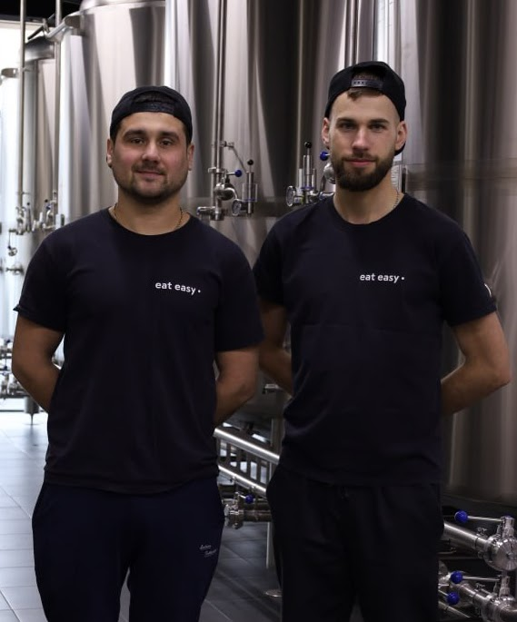
Випускники БПБВ. Косіковський — Головний технолог «Eat Easy». Хромець — директор з виробництва «Eat Easy», розробив технологію та обладнання для виробництва Комбучі.
Ми вдячні нашій кафедрі за отримані знання, які дозволили нам стати професіоналами в даній справі. Цей досвід допоміг нам створити якісний, поживний та корисний продукт під назвою Комбуча.
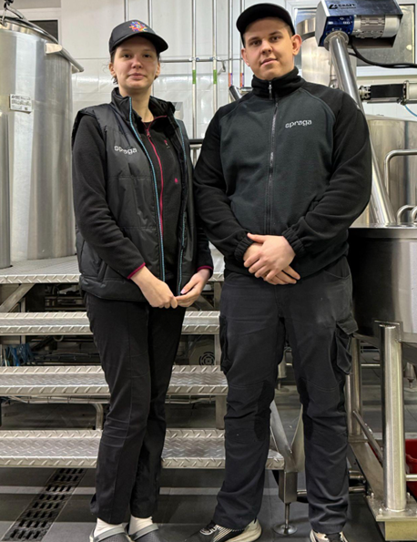
Працюють на ТОВ «ІТ ІЗІ». Коноваленко — лаборант відділу якості, вступила до магістратури 2025 р. Джевага — молодший технолог, 4-й курс НУХТ з дуальною освітою.
Кафедра біотехнології продуктів бродіння і виноробства дала мені ґрунтовну теоретичну підготовку та практичні навички, необхідні для роботи на сучасному виробництві. Навчання сприяло формуванню професійного мислення, відповідального ставлення до якості продукції та розуміння реальних технологічних процесів, що стало міцною основою для мого професійного розвитку.
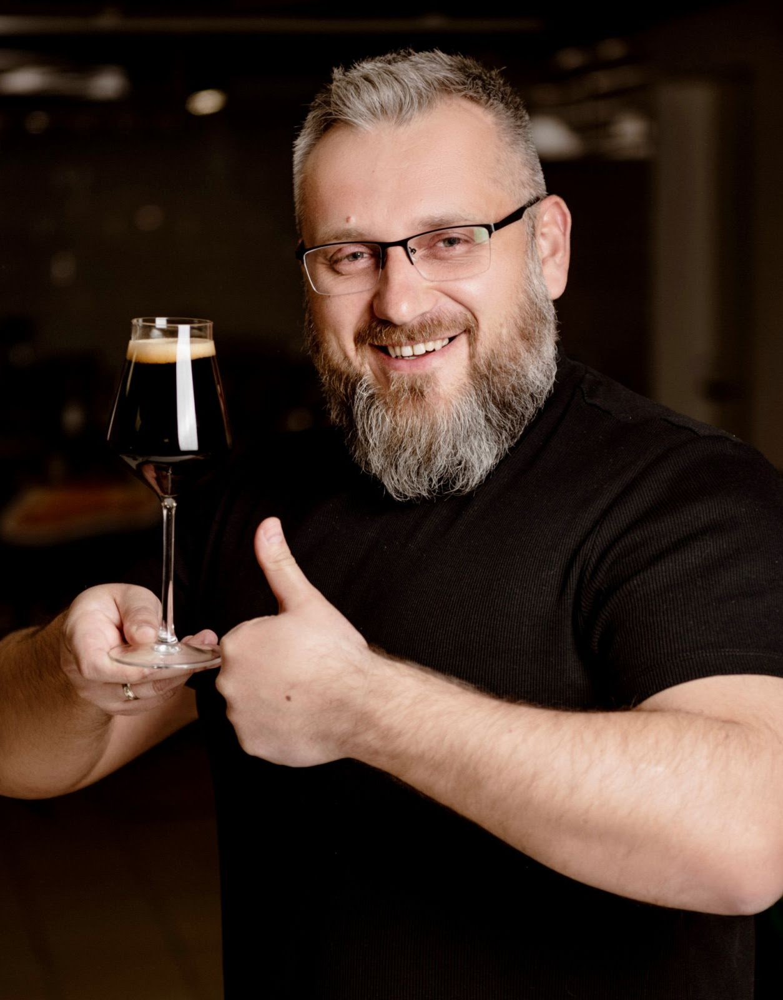
Випускник 1999 р. Співвласник PestBrewery, головний технолог AltBier — зварив найміцніше пиво в Україні (BarleyWine, 35%). Співвласник «Пивних курсів». З 2021 — керівник проектів «Власні броварні Сільпо». Призер міжнародного конкурсу «Zlatá pivní pečeť» (Чехія).
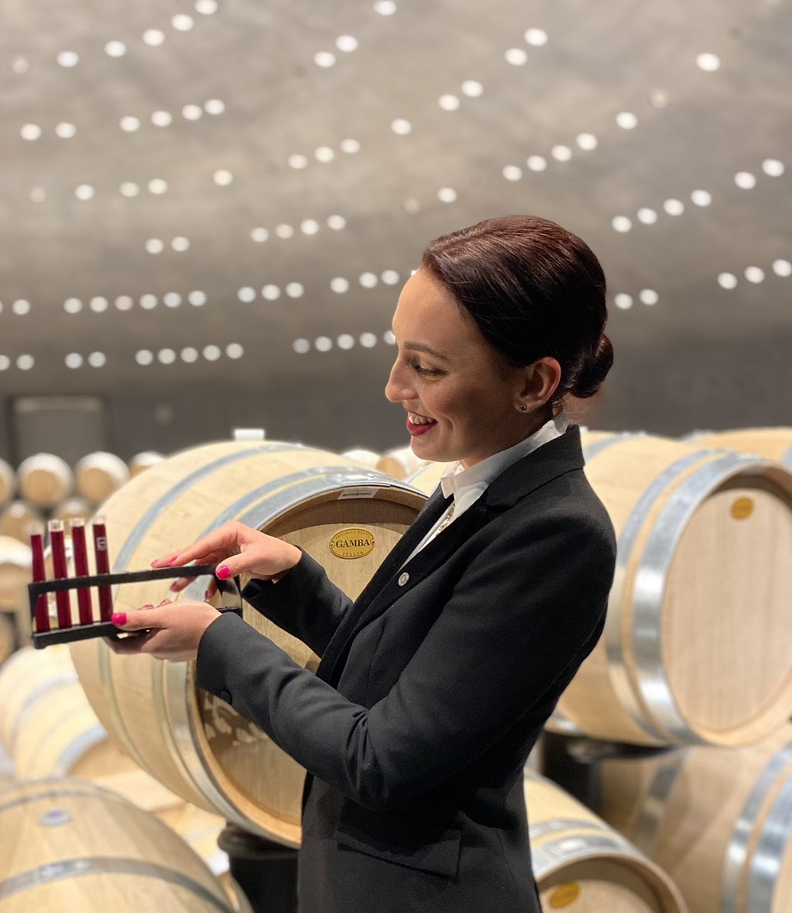
НУХТ 2010–2015. Винороб з 10-річним досвідом: Крим, Нова Зеландія, Бордо. Нині — винороб Small Vines у Каліфорнії.
Я зовсім випадково вступила на кафедру БПБВ, але вже майже 10 років щаслива, що є її випускницею. Виноробство — це та сфера діяльності, де я кожної секунди черпаю енергію. Для мене наша кафедра ніколи не була просто місцем для навчання. Це була друга сім'я, з якою завжди хотілося розділити найважливіші моменти життя і провести якнайбільше часу. Низький уклін моїм викладачам, які так круто змінили моє уявлення про харчову промисловість. Я неймовірно вдячна за всі здобуті знання, що допомагають мені не лише робити якісну продукцію, а ще й втерти носа міжнародним колегам.
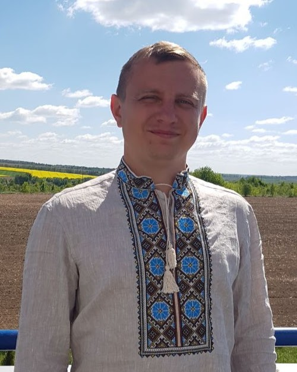
НУХТ 2007–2012, к.т.н. 2016. Пройшов шлях від слюсара до оператора брагоректифікаційної установки. З 2021 — головний технолог цеху спирту ТМ «Nemiroff».
Викладачі кафедри надають не лише теоретичні знання, але й важливий практичний досвід, який став важливим кроком в моєму професійному розвитку. Я цінував їхню підтримку, яку вони надавали мені протягом навчання. Крім того, кафедра БПБВ стала для мене місцем, де я знайшов багато однодумців та друзів. Сьогодні я пишаюся своєю освітою та можливістю працювати в цій захоплюючій галузі. Нехай наша кафедра і надалі процвітає та надає студентам можливість розвиватися та досягати великих вершин у біотехнологіях продуктів бродіння та виноробства.
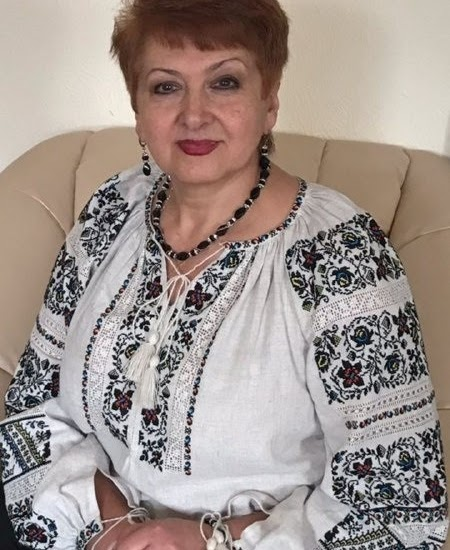
Закінчила КТІХП (НУХТ) 1986 р. Директор ТОВ «Пивоварня Зіберта» понад 35 років. Під її керівництвом завод перебудовано у сучасне підприємство європейського зразку. Заслужений працівник промисловості України, Почесний громадянин м. Фастова (2022).
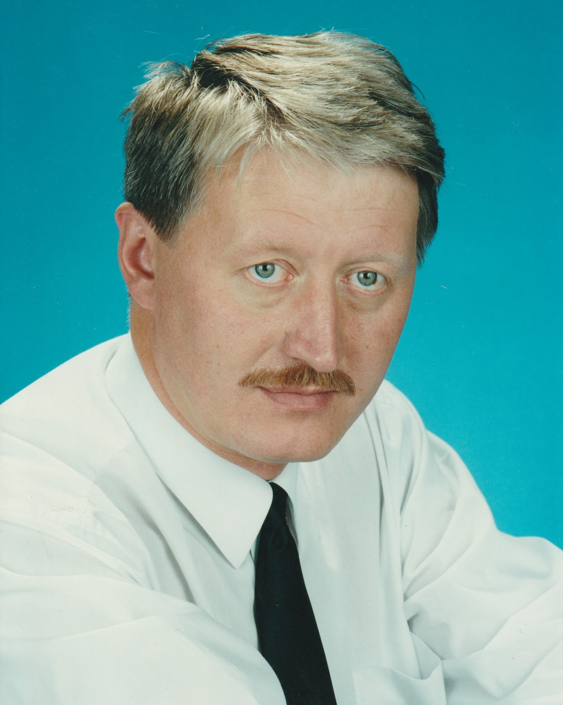
КТІХП 1983. Директор спиртових заводів, голова ради директорів спиртових заводів України. З 2011 — керівник ТОВ «Органіка». Заслужений працівник промисловості України.
Пишаюся тим, що я є випускником кафедри біотехнології продуктів бродіння і виноробства, що мій син продовжив мій фах та захистив свою магістерську роботу з використанням інноваційних технологій, розробником яких є ТОВ «Органіка», під керівництвом ще мого наставника Петра Леонідовича Шияна, які впроваджені у виробництво і надали змогу збагатити надбання кафедри.
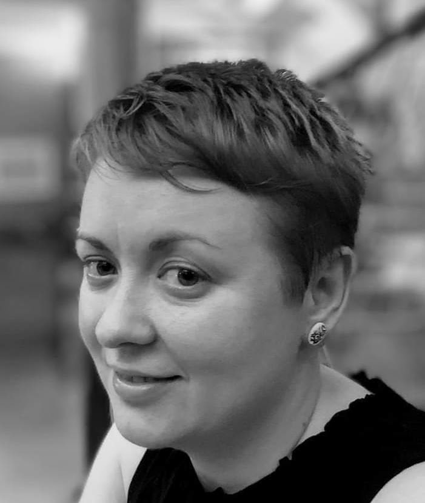
НУХТ 2007–2012. Начальник з якості та винороб на виноробні King Valley Wines, Вікторія, Австралія.
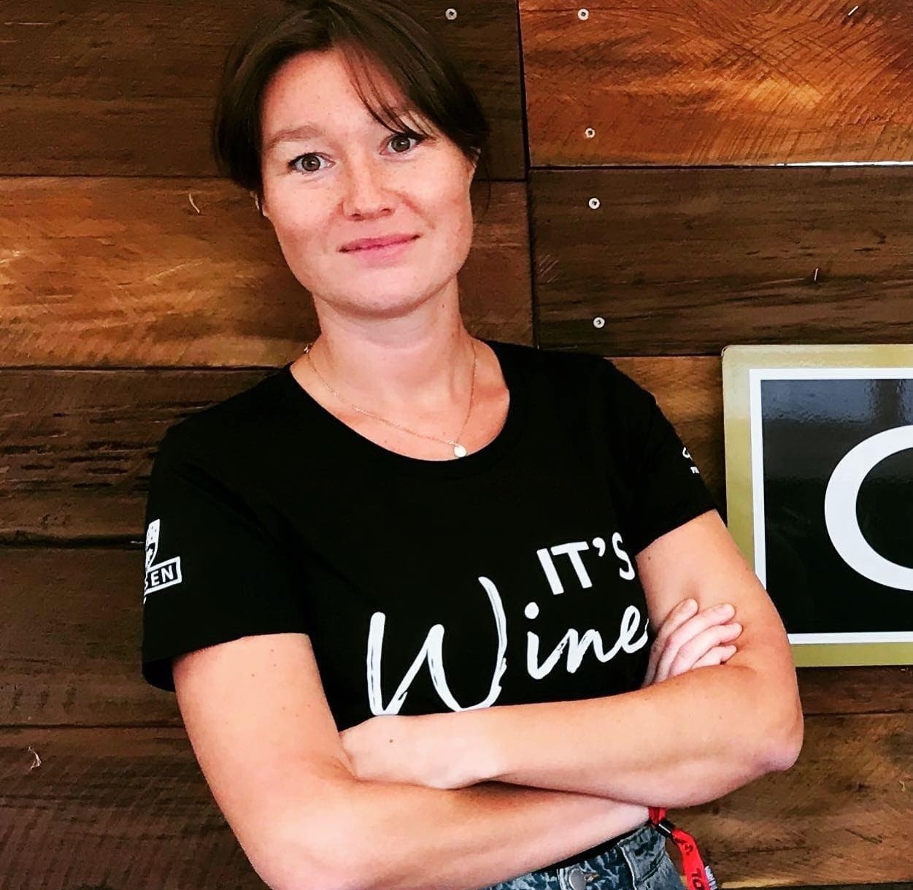
НУХТ 2007–2012. Винороб у Marlborough Vintners, Blenheim, Нова Зеландія.
Щорічно за програмою Erasmus+ в університеті Гайзенхайма (Німеччина) навчаються 1–2 студенти за професійним спрямуванням «Виноробство та напої».
З 2020 року здобувачі та викладачі кафедри беруть участь у програмі Erasmus+. Студенти бакалаврату та магістратури навчаються в Університеті Гайзенхайм (Німеччина) — серцевині виноробного регіону Рейнгау, батьківщині Рислінгу. У 2023 р. здобувачі кафедри представляли Україну на міжнародному конкурсі молодих знавців вина в Парижі, посівши 10-те місце серед 70 учасників з різних країн Європи.
Мені дуже подобається перебувати в багатокультурному середовищі, де я щодня дізнаюся щось нове від людей з різних куточків світу. На курсі «Сенсорний аналіз» ми вивчали смакові якості вин із різних країн, поєднуючи теорію з практикою. Разом із Златою Присяжнюк ми відвідали світову виставку вина ProWein у Дюссельдорфі та мали нагоду підтримати українських виробників на міжнародному рівні. Навчання та можливості тут справді надихають!
Це була унікальна можливість пізнати інший стиль життя й здобути незабутній досвід. Програма мобільності стала поштовхом для мого професійного та наукового розвитку, допомогла чіткіше визначитися зі спеціальністю та майбутніми цілями. Я відвідала світову виставку ProWein, а разом зі студентами побувала в регіоні Шампань, де мала можливість відвідати сім відомих будинків шампанського.
Гайзенхайм — невеличке студентське містечко між річкою Рейн та виноградниками Рейнгау, відоме як дім Рислінгу. В університеті на вас чекає дуже багато цікавого — знайомство зі студентами з понад 50 країн, практика та сенсорна оцінка вина, різноманітні заходи. Якщо у вас з'явиться можливість поїхати за кордон по обміну — не втрачайте її!


Здобувачі бакалаврату та магістратури спеціальності відвідали пивоварню VARVAR. Головний технолог Олена Дерій провела лекцію та екскурсію виробництвом. Студенти побачили повний технологічний цикл — від підготовки сировини до готового пінного напою, та взяли участь у дегустації. Захід відбувся за ініціативи доцентів Романа Мукоїда та Юрія Булія.


Магістранти долучилися до професійної лекції від Академії інтелектуальної власності на тему «Інтелектуальна власність у сучасному світі: система об'єктів і прав на них». Лекція відбулася в рамках освітньої компоненти під керівництвом гаранта В. Прибильського.

За сприяння проф. Віталія Прибильського відбулася лекція на тему «Від регіону до ринку: географічні зазначення як інструмент просування українських товарів» у рамках проєкту «IP Connecting Students». Магістранти ознайомилися з поняттям географічних зазначень, особливостями реєстрації в Україні та ЄС, прикладами успішного використання.


Здобувачі першого року магістратури разом із доц. Романом Мукоїдом відвідали пивоварню Beermaster у ТРЦ Respublika Park. Екскурсію провів пивовар Віктор Ващук. Родзинкою стала дегустація пива різних стилів — від класичного лагера до Barley wine.


За запрошенням магістранта Івана Бачурина представники кафедри Марина Білько та Роман Мукоїд відвідали фінал конкурсу. Захід об'єднав професіоналів різних сфер. Особливу увагу привернули завдання, що стосувалися українського виноробства.
Здобувачі кафедри Владислава Мильникова та Марія Литовченко представили Україну на міжнародному конкурсі у Парижі. У конкурсі брали участь 64 конкурсанти з 19 європейських країн. Керівником делегації була проф. Марина Білько.


Викладачі НУХТ взяли участь у бізнес-зустрічі. Модератором дискусійної панелі «Досвід та особливості впровадження технологічних інновацій на крафтових підприємствах» виступив доц. Роман Мукоїд. Спікери поділилися досвідом у впровадженні інновацій у виробництво напоїв.


Лекція в рамках спільного проєкту Укрвинпрому та НУХТ у співпраці з Університетом Бордо. Темою були інноваційні мікробіологічні підходи у виробництві білих вин, вплив рас дріжджів на смак, роль «кислих» дріжджів для свіжості білих вин.


Здобувачі третього курсу та куратор Роман Мукоїд відвідали пивоварню «Varvar». Екскурсію провели головний пивовар Антон Паламарчук та головний технолог Олена Дерій — випускники університету. Студенти ознайомилися з усіма етапами виробництва пива.


На кафедрі відбулася зустріч здобувачів третього курсу з представниками ТОВ «ЛВН ЛІМІТЕД» Nemiroff. HR-менеджер Оксана Терещенко та головний технолог Валерій Шевчук (випускник кафедри) ознайомили з історією та технологіями підприємства. Домовлено про практики та працевлаштування.


Здобувачі 3 курсу відвідали ДП «Червонослобідський спиртзавод» — один із прогресивних спиртових заводів України (історія з 1881 року). Екскурсію провів випускник кафедри Бальоха Іван Дмитрович.

Кафедрою організовано зустріч здобувачів другого курсу з представниками Nemiroff. Завідуючий виробництвом Олександр Іванусенко (випускник кафедри) надав інформацію щодо технологічних етапів. Компанія готова надати можливість проходження практик з подальшим працевлаштуванням.

Гарант програми проф. Віталій Прибильський ознайомив із вимогами до складання нової редакції ОПП. Обговорено питання робочої групи, формування вибіркових дисциплін, доцільність перенесення переддипломної практики у другий семестр.
В рамках дисципліни «Технологія пива» керівника проектів «Власні броварні Сільпо» Віктора Ващука запросив доц. Роман Мукоїд. Тема: «Сучасний стан і перспективи виробництва пива в Україні та світі». Найактивнішому здобувачу презентовано пляшку «Cantillon» Rose de Gambrinus.
Здобувачі груп ТБ-3-8 та ТБ-3-9ск відвідали міні-пивоварню Varvar. Екскурсію провела головний мікробіолог Olena Derii. Студенти ознайомилися з сировиною, обладнанням очистки води, бродильними установками, лінією розливу. Продегустовано п'ять сортів, зокрема Captain Salt, Citra APA, Milk Stout, Golden Ale, Blanche de Blanche.
Кафедра провела виїзне засідання на підприємстві Spraga Ukraine, де працюють випускники кафедри та НУХТ. Директор з виробництва Євген Хромець провів екскурсію. Головний технолог Назар Косіковський розказав про плани на нові види комбучі. Проведена дегустація з дегустаційними листами.
В рамках дисципліни «Вступ до харчових технологій» здобувачі першого курсу разом із доц. Миколою Бондарем відвідали пивоварню BeerMaster у ТРЦ «Respublica». Екскурсію провів головний технолог Олександр Руденко — випускник кафедри. Проведена навчальна дегустація солоду, хмелю та безалкогольного пива.
Доцент Микола Васильович Бондар провів відкрите заняття з дисципліни «Інтелектуальна і промислова власність» для магістрів факультету БТЕК. Тема: Право інтелектуальної власності в Україні. Були присутні групи ПФБ-1-1М, ЕК-1-3М та викладачі кафедри.

Студенти третього курсу разом з доц. Романом Мукоїдом відвідали крафтову пивоварню у ТРЦ «Respublica». Головний технолог Олександр Руденко — випускник кафедри БПБВ — провів екскурсію та навчальну дегустацію солоду, хмелю та різних сортів пива. Продегустовано IPA, пиво з гарбузом та персиком, подвійне охмелення.
Першокурсники разом із доц. Миколою Бондарем відвідали підприємство «Eat Easy». Директор з виробництва Євген Хромець та головний технолог Назар Косіковський (випускники кафедри) ознайомили з історією підприємства, технологією комбучі та роботою лабораторії. Відбулася дегустація готової продукції.


Приєднуйтесь до спільноти майбутніх технологів, науковців та інноваторів. Від класичного виноробства до крафтового пивоваріння — ваша кар'єра починається тут.
вул. Володимирська, 68
м. Київ, 01601, Україна
Національний університет харчових технологій
Скануйте QR‑коди, щоб перейти на сторінки кафедри.